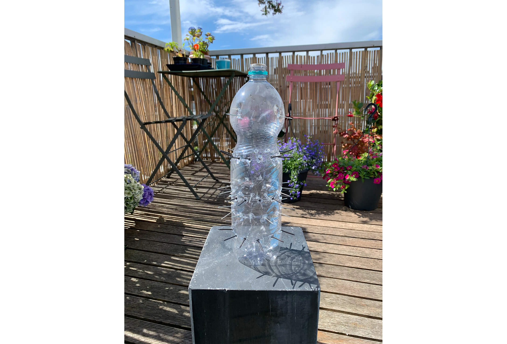
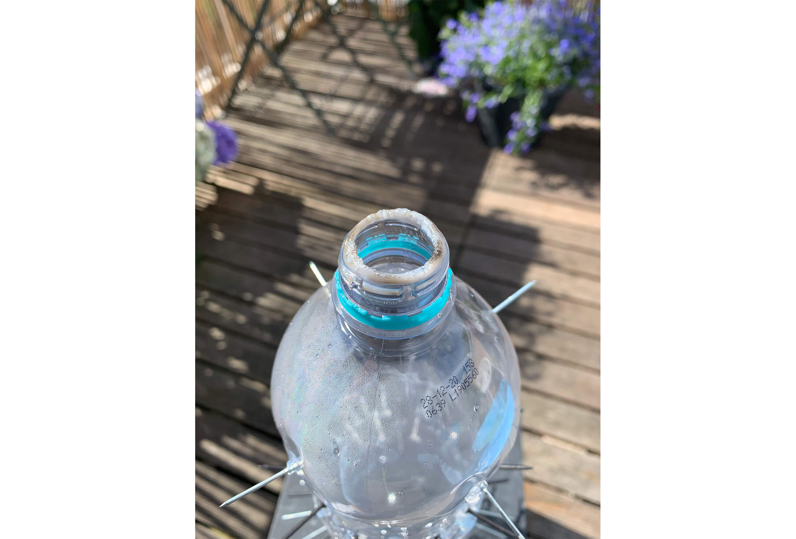
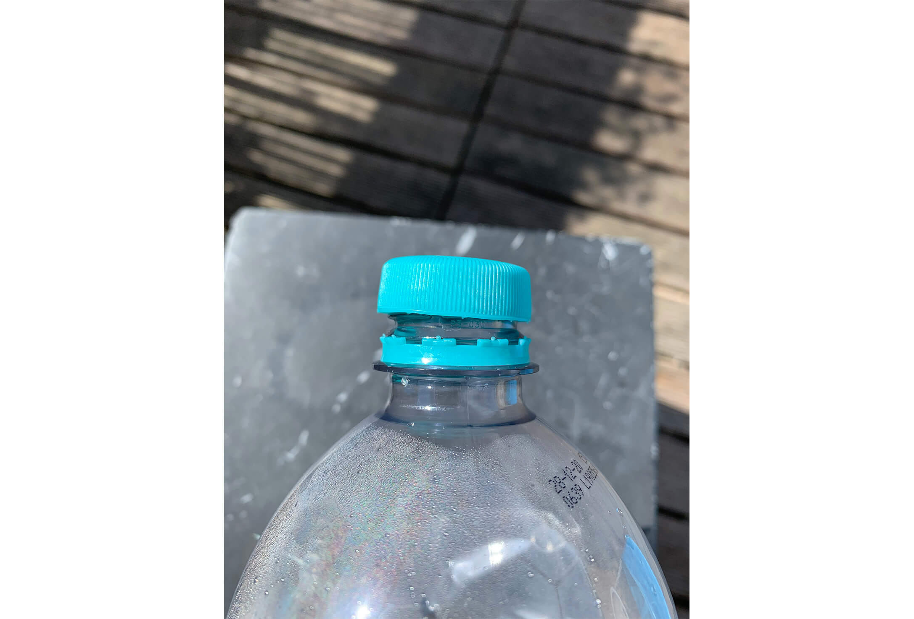
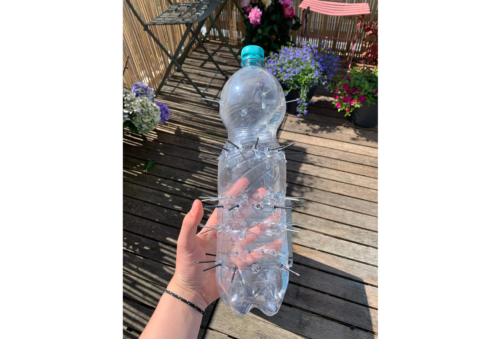

Ik begon de trimester periode met een blank canvas.
Ik wist nog niet wat ik ging doen.
Ik begon met een flesje te analyseren.
Te vertellen welke vormgeving in het flesje voorkwamen.
Toevallig was het een evian flesje, mijn favoriet.
Ik was ook aan het uitleggen waarom ik het evian flesje koos in plaats van een bijv een stalen fles of een dopper.
Toet kwam ik op het idee om het ideale flesje te gaan ontwerpen.
Maar die was er al voor mij, namelijk het evian flesje.
Zanne attendeerde mij er op dat het veel interessanter zou zijn als ik het minds ideale flesje zou maken. En dat is wat ik heb gemaakt.
De fles die ik heb gemaakt is gemodificeerd,
Zo min mogelijk gebruikers vriendelijk.
Ik heb spijkers vastgemaakt in een patroon waardoor je de fles niet goed vast kan pakken zonder pijn te krijgen.
Ook is de fles heel groot wat je ook als positief kan beschouwen maar het is bedoeld om zo onhandig mogelijk te zijn, je kan hem niet makkelijk vervoeren.
De dop van de fles kan niet meer vast draaien en het mond gedeelte voelt prettig aan tijdens het drinken.
Click here to talk with the artist!
   